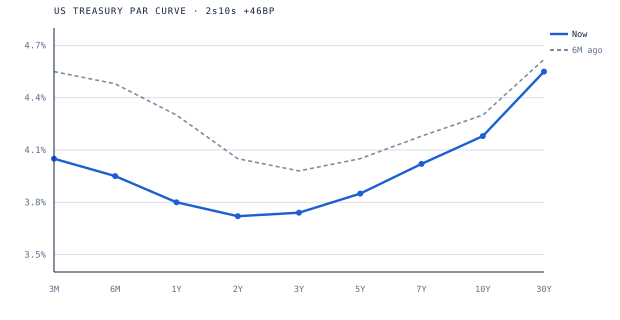
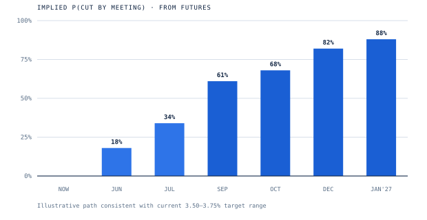

A structured log of FOMC statement language shifts, paired with the policy decisions that followed and the Treasury-market reaction that priced them. The goal is to isolate which specific phrases — inserted, removed, or changed — carry genuine predictive weight, and which are noise.
The reaction data in the log only means something against the curve and the path the market is pricing. Representative levels · current hold cycle

The front end has fallen as the Fed delivered cuts into the 3.50–3.75% range, while the long end held — leaving the 2s10s positively sloped (+46bp) after a long inversion.

Futures-implied odds of a cut by each meeting. The market leans toward patience near term and a higher cut probability into year-end and early 2027.
Cut delivered, but the statement noted reserve balances have declined to ample levels and began initiating purchases of shorter-term Treasury securities to maintain adequate reserves — a technical, not dovish, signal.
The dot plot turned hawkish: 2026 median revised to one cut from four. Three dissents.
First explicit risk language: the implications of developments in the Middle East for the U.S. economy are uncertain. Labor read shifted — unemployment has shown signs of stabilization → has been little changed.
Hot PPI (+0.7% vs 0.3% exp.) drove a bear-flattening yield spike the same day.
Language analysis is interpretive, and small samples mean "predictive" phrases are suggestive, not statistically proven. The intraday window can capture coincident data surprises. This is a research log, curated by hand — not an automated signal.
| Date ▼ | Stance | Decision | Next Move | 2Y Δ ↕ | 10Y Δ ↕ | 2s10s |
|---|
Six most recent non-retained phrase edits across tracked meetings.
| Rank | Phrase | Signal | Reliability | Interpretation |
|---|